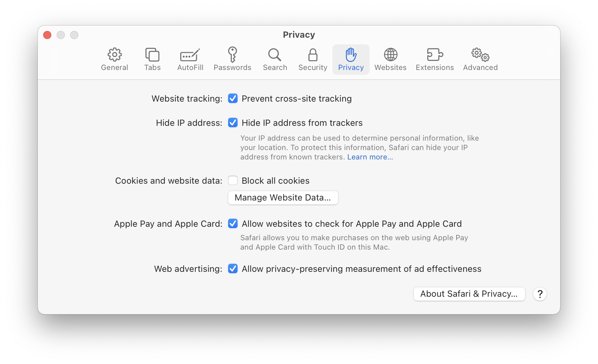

Cookies & LocalStorge
Cookies & localStorage worden beide gebruikt om gegevens op te slaan
op het apparaat van een gebruiker.
Wat zijn Cookies?
Cookies zijn kleine tekstbestanden die worden opgeslagen op de
computer van een gebruiker door de website die de cookie heeft
gemaakt. Deze cookies kunnen informatie bevatten over de gebruiker en
hun activiteiten op de website, zoals de gebruikersnaam, de inhoud van
een winkelwagentje of taalvoorkeuren. Wanneer de gebruiker de website
opnieuw bezoekt, kan de website de opgeslagen informatie in de cookie
gebruiken om de gebruikerservaring te verbeteren of om de website op
de juiste manier te laten functioneren.
Wat is LocalStorage?
LocalStorage is een andere methode voor het opslaan van gegevens op
het apparaat van een gebruiker. Het werkt op een vergelijkbare manier
als cookies, maar slaat de gegevens lokaal op in de webbrowser van de
gebruiker. Dit betekent dat de opgeslagen gegevens alleen toegankelijk
zijn vanuit de webbrowser waarin ze zijn opgeslagen. LocalStorage kan
worden gebruikt om gegevens op te slaan die nodig zijn voor een
website om goed te functioneren, zoals gebruikersvoorkeuren,
instellingen en andere informatie.
Beide methoden hebben voor- en nadelen. Cookies kunnen bijvoorbeeld
worden gebruikt om gebruikers te volgen en kunnen de privacy van de
gebruiker aantasten. Aan de andere kant zijn cookies vaak nodig om
bepaalde websitefuncties te laten werken, zoals inloggen en
winkelwagentjes. LocalStorage biedt meer privacy dan cookies omdat de
informatie op het apparaat van de gebruiker wordt opgeslagen, maar het
kan niet worden gebruikt om informatie te delen tussen verschillende
websites.
Cookies Blokkeren in Safari
Settings > Privacy > Cookies and website data.

Content Blockers & Add Blockers
Content blockers en ad blockers zijn softwareprogramma's die zijn
ontworpen om bepaalde soorten inhoud op webpagina's te blokkeren en te
voorkomen dat advertenties worden weergegeven.
Wat doet een Ad Blocker?
Ad blockers blokkeren advertenties op webpagina's, waardoor de
gebruiker een ad-free browsing-ervaring krijgt. Advertenties kunnen
storend zijn en de laadtijd van een website vertragen. Ad blockers
kunnen echter de inkomsten van website-eigenaren verminderen, omdat
advertenties de belangrijkste manier zijn om geld te verdienen met
veel gratis websites.
Wat doet een Content Blocker?
Content blockers blokkeren specifieke soorten inhoud op webpagina's,
zoals scripts, pop-ups, trackers en andere elementen die de
gebruikerservaring kunnen verstoren of de privacy van de gebruiker
kunnen schaden. Content blockers kunnen ook worden gebruikt om
bepaalde soorten inhoud te blokkeren, zoals volwassen inhoud of
gewelddadige inhoud.
Beide soorten software kunnen worden geïnstalleerd als
browser-extensies of als standalone programma's. Ad blockers en
content blockers zijn populair geworden vanwege de privacy- en
beveiligingsvoordelen die ze bieden, evenals de mogelijkheid om de
gebruikerservaring op het web te verbeteren.
Content Blockers in Safari
Settings > Websites > Content Blockers
AdBlockers in Safari
Settings > Extensions > Adblock